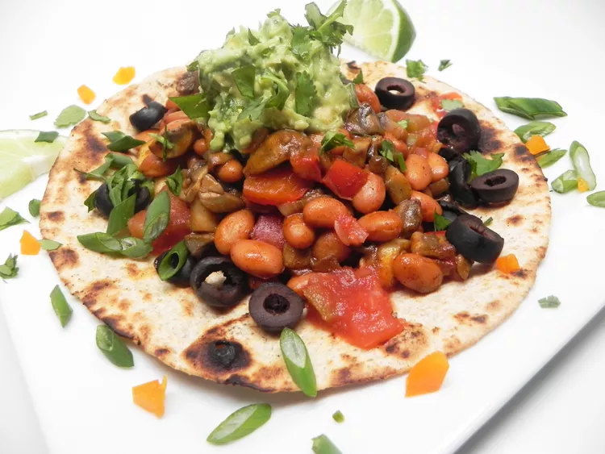

Veggie Tacos

Description
A delicious vegetarian version of the classic Mexican dish.
ingredients
- 1 tablespoon olive oil
- 1 ½ pound cremini mushrooms, coursely chopped
- 1 red bell pepper, diced
- 1 (15 ounce) can pinto beans, rinsed and drained
- 1 (1 ounce) packet taco seasoning mix
- 2 green onions, sliced thinly
- ¼ cup water
- 6 (8 inch) whole wheat tortillas
Steps
- Heat olive oil in a skillet over medium-high heat. Add mushrooms and red bell peppers; saute until mushrooms are soft and meaty, about 20 minutes. Add pinto beans, taco seasoning mix, green onions, and water. Stir well; continue to cook until all liquid is evaporated, about 5 minutes more
- Divide mushroom filling evenly between tortillas, and add your favorite taco toppings!